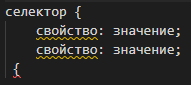
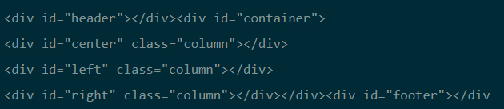
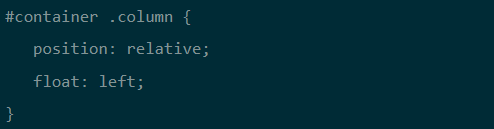
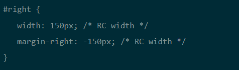

CSS (Cascading Style Sheets, каскадные таблицы стилей) — язык описания внешнего вида HTML-документа.
Это одна из базовых технологий в современном интернете. Практически ни один сайт не обходится без CSS,
поэтому HTML и CSS действуют в единой связке.
Каскадные таблицы стилей работают с HTML, но это совершенно другой язык. HTML
структурирует документ и упорядочивает информацию, а CSS взаимодействует с браузером,
чтобы придать документу оформление.
На языке HTML мы создаем размеченный текст — документ с гиперссылками, таблицами,
маркированными списками, разными начертаниями шрифтов, заголовками, подзаголовками и так далее.
Получаем «простыню» текста с таблицами и иллюстрациями. Интернет изобрели ученые, и для них
такое положение вещей было приемлемым. Но все изменилось, когда WWW пошел в массы и свои странички
начали создавать простые пользователи, которые хотели индивидуальности и самовыражения,
а также коммерческие компании со своими корпоративными стандартами оформления. В общем,
веб-страницам понадобилось индивидуальное оформление: стиль.
Для чего нужна каскадная таблица стилей
Вспомним, как все начиналось. Первая версия стандарта CSS опубликована 17 декабря 1996 года.
Основной посыл — добавить оформление документа без программирования или сложной логики.
Оформление — это цвета, шрифты, расположение отдельных блоков на странице и т.д.
В таблице стилей мы прописываем стили (правила) оформления.
Каждое правило состоит из селектора и блока объявлений. Селектор определяет,
на какие части документа распространяется правило. Блок объявлений помещается в фигурные
скобки и состоит из одного или более объявлений, разделенных точкой с запятой.
На самом деле это очень просто. Вот как выглядит простейшее правило с двумя свойствами
для двух селекторов в таблице стилей:

Разделение контента (HTML) и представления (CSS)
Первые макеты на CSS использовали свойство CSS float, хотя первоначально его ввели для
размещения изображения внутри колонки текста слева или справа. Веб-дизайнеры и верстальщики
придумали способ, как создавать CSS для простых макетов с колонками.
В этом случае HTML размечается следующим образом:


Будущее за CSS3
Cascading Style Sheets3 (CSS3) — третье поколение стандарта CSS, которое сейчас находится в
активной разработке. Как HTML5 для HTML, так и CSS3 для CSS стал самой масштабной ревизией
в истории стандарта.
В отличие от предыдущих версий, спецификация разбита на модули, разработка и развитие которых
идут независимо. То есть CSS3 — это тоже не просто стандарт, а «набор технологий», как и HTML5.
Эти технологии понемножку проникают в браузеры. Каждая новая версия Chrome или Firefox поддерживает
какой-то новый кусочек CSS3, несколько новых свойств. То есть с каждым месяцем расширяются наши
возможности по оформлению документов.
За ходом разработки CSS3 можно следить на странице Консорциума W3C. Кстати,
уже началась разработка стандарта CSS4, но пока все его спецификации находятся
в статусе черновиков.
Методологии CSS
Мы разобрались, что делает CSS. Однако профессиональная работа с этим языком на больших
кодовых базах невозможна без специального инструментария и стандартов написания CSS,
чтобы код был поддерживаемым и его могли использовать в коллективной работе.
Такие рекомендации по написанию называются методологиями CSS.
Нет одной общепринятой методологии CSS. Их несколько, а со временем возможно появление новых.
Когда вы освоите сам язык, то начнете разбираться в методологиях — и перед вами откроется
совершенно новый мир, в котором кипит жизнь, бурлят обсуждения на форумах, сталкиваются
непримиримые точки зрения, рождаются и умирают, сродни религиозным культам, новые методологии.
Например, в последние несколько лет появились и набрали силу две: Atomic CSS (Functional CSS) и CSS
в JS. Первая базируется на идее создания маленьких узкоспециализированных классов с названиями,
которые основаны на визуальной функции, а вторая — на определении стилей CSS не в отдельной таблице
стилей, а прямо внутри каждого компонента. Обе явно противоречат устоявшимся лучшим практикам CSS, но,
возможно, со временем и сами станут «лучшими практиками».